عن هذه المحاضرة
هذه المحاضرة موجهة للهاوي الذي اجتاز اختبار الرخصة وبدأ مرحلة الممارسة الفعلية. تساعدك الشرائح على فهم السلوكيات المهنية، أساسيات التشغيل، وطريقة الظهور على الهواء بصورة مسؤولة.
25 شريحةأخلاقيات التشغيلإجراءات الاتصالسجل الاتصالات
001
الهاوي الجديد
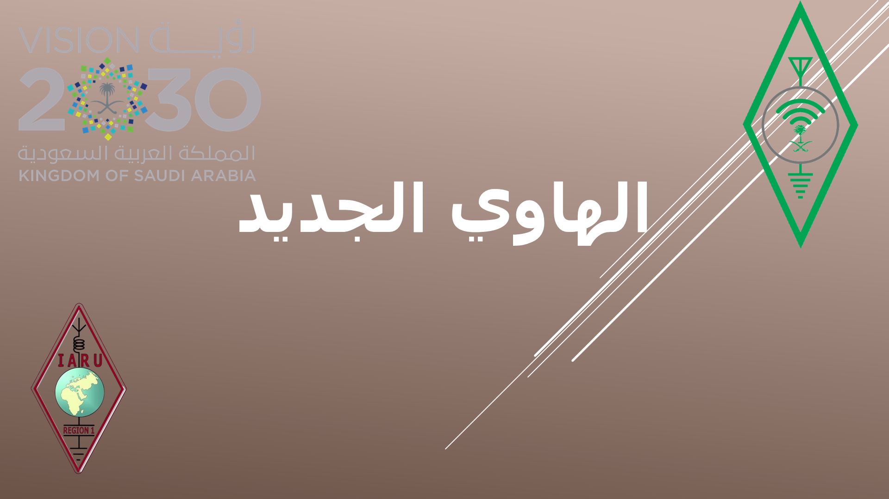
شرح مختصر
تفتتح الشريحة المحاضرة وتحدد هويتها كمرحلة جديدة بعد اجتياز الاختبار. تذكّر أن الحصول على الرخصة هو بداية ممارسة مسؤولة للهواية وليس نهاية الطريق.
002
تهنئة وترحيب
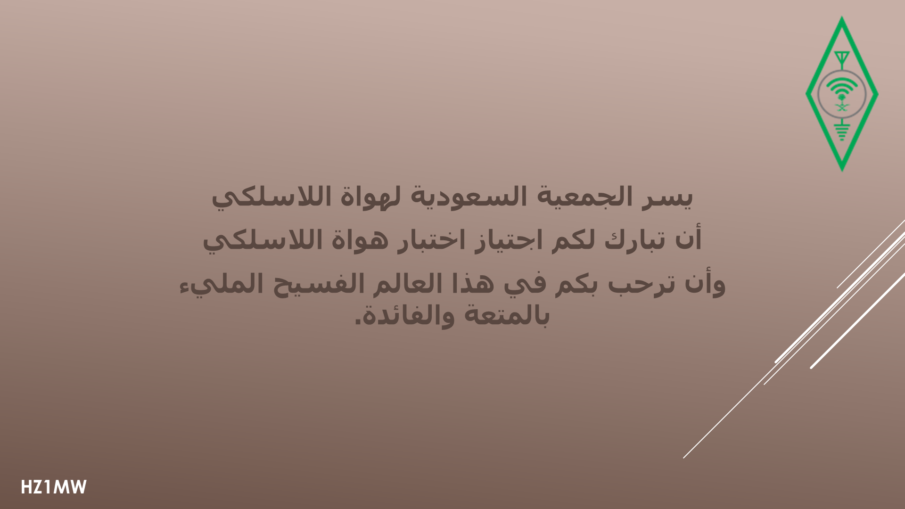
شرح مختصر
تركز الشريحة على تهنئة الهاوي الجديد والترحيب به في مجتمع هواة اللاسلكي. الرسالة الأهم هي أن الهواية واسعة وممتعة، وأن التعلم والمشاركة هما مفتاح الاستفادة منها.
003
دور الجمعية السعودية لهواة اللاسلكي
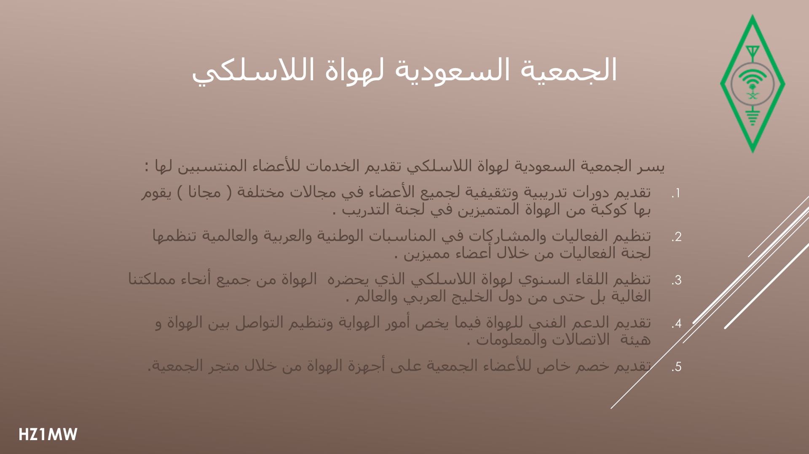
شرح مختصر
تعرض الشريحة أبرز ما تقدمه الجمعية للهواة من تدريب وفعاليات ودعم فني وتواصل مجتمعي. على الهاوي الجديد أن يعرف أن الجمعية بوابة مهمة للتعلم والمشاركة وبناء العلاقات داخل الهواية.
004
أخلاقيات هاوي اللاسلكي: الالتزام بالأنظمة
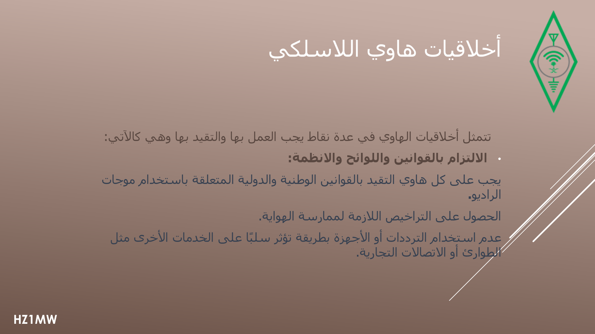
شرح مختصر
تشرح الشريحة أن أول أساس لممارسة الهواية هو الالتزام باللوائح والتراخيص والترددات المسموح بها. تذكّر أن التشغيل الصحيح يحميك ويحمي الخدمات الأخرى من التداخل أو الاستخدام غير النظامي.
005
أخلاقيات هاوي اللاسلكي: الاحترام المتبادل
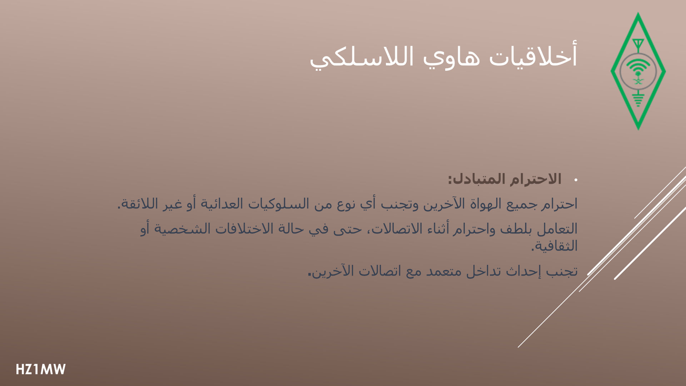
شرح مختصر
توضح الشريحة أهمية الاحترام أثناء الاتصالات مع بقية الهواة. على الهاوي الجديد أن يجعل الأدب وحسن التعامل جزءاً دائماً من أسلوبه على الهواء.
006
أخلاقيات هاوي اللاسلكي: التعاون والمساعدة
شرح مختصر
تؤكد الشريحة أن الهواية تقوم على التعاون ونقل الخبرة، خصوصاً مع الهواة الجدد. تذكّر أن المشاركة في التدريب والأنشطة وخدمة المجتمع تزيد قيمة الهواية للجميع.
007
أخلاقيات هاوي اللاسلكي: المسؤولية الاجتماعية
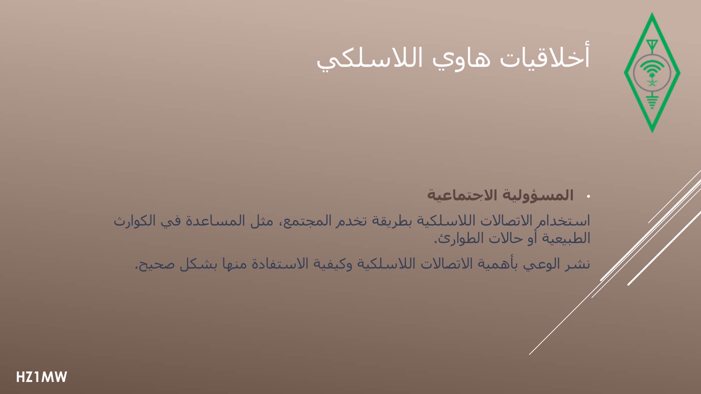
شرح مختصر
تربط الشريحة بين الهواية وخدمة المجتمع، خاصة في الطوارئ والكوارث. على الهاوي الجديد أن ينظر إلى مهاراته اللاسلكية كقدرة يمكن أن تنفع الآخرين عند الحاجة.
008
أخلاقيات هاوي اللاسلكي: التقنية والمهارة
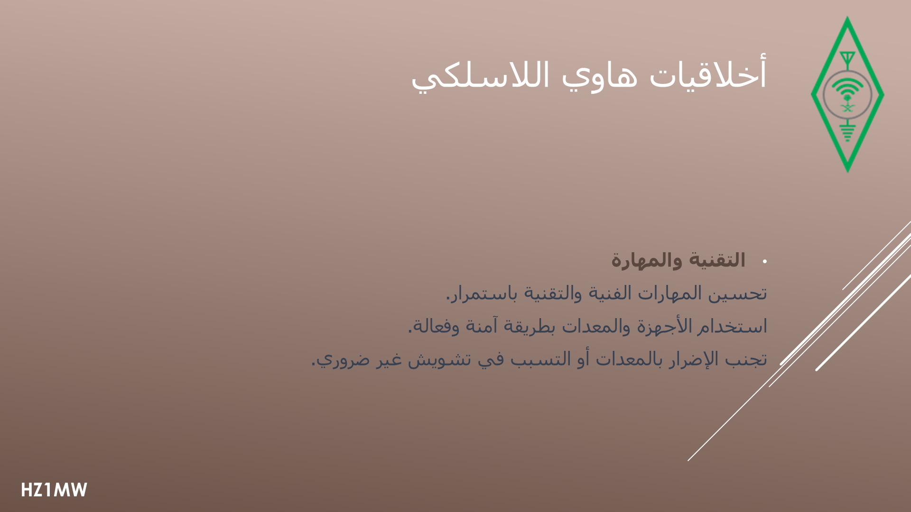
شرح مختصر
توضح الشريحة أن تطوير المهارة الفنية جزء أساسي من نضج الهاوي. تذكّر أن الاستخدام الآمن والفعال للأجهزة يقلل التشويش ويحافظ على المعدات وجودة الاتصال.
009
أخلاقيات هاوي اللاسلكي: السرية والخصوصية
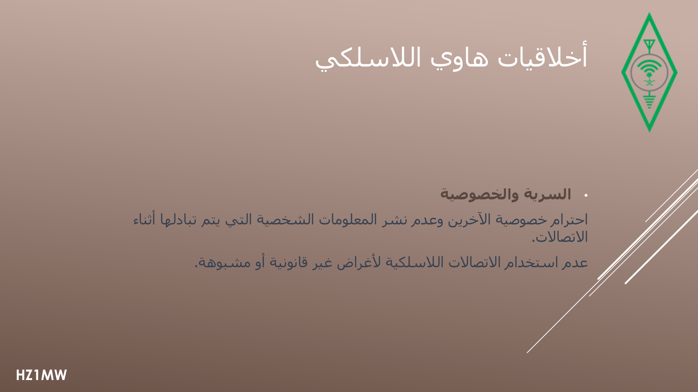
شرح مختصر
تؤكد الشريحة احترام خصوصية الآخرين وعدم إساءة استخدام ما يسمعه الهاوي على الترددات. الرسالة المهمة هي أن الثقة والمسؤولية أساس التعامل مع الاتصالات اللاسلكية.
010
أخلاقيات هاوي اللاسلكي: السلوك الأخلاقي
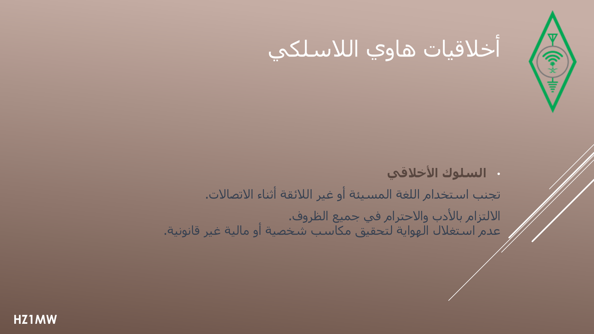
شرح مختصر
تشرح الشريحة ضرورة تجنب الألفاظ المسيئة والسلوك غير اللائق على الهواء. تذكّر أن الهاوي يمثل نفسه ومجتمعه، وأن الالتزام بالأدب يحافظ على صورة الهواية.
011
أخلاقيات هاوي اللاسلكي: الحفاظ على البيئة
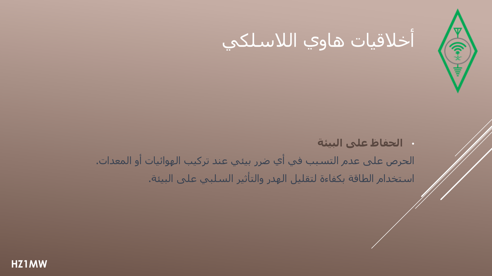
شرح مختصر
تلفت الشريحة الانتباه إلى مسؤولية الهاوي عند تركيب الهوائيات والمعدات. المطلوب هو ممارسة الهواية بطريقة آمنة ومنظمة لا تسبب ضرراً للمكان أو المحيط.
012
أخلاقيات هاوي اللاسلكي: الروح الرياضية
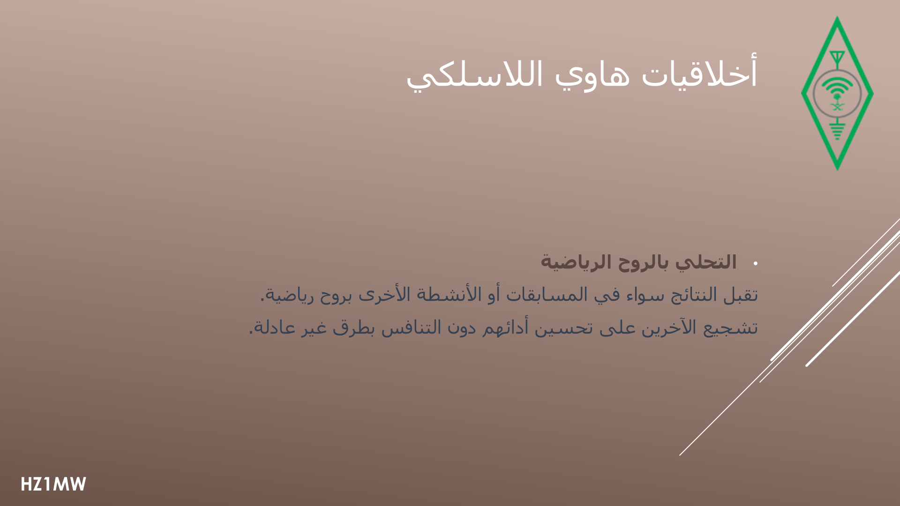
شرح مختصر
توضح الشريحة أهمية تقبل النتائج والتعامل بعدل في المسابقات والأنشطة. على الهاوي الجديد أن يجعل المنافسة وسيلة للتعلم والتحسن لا سبباً للتوتر أو الإساءة.
013
أخلاقيات هاوي اللاسلكي: التعلم المستمر
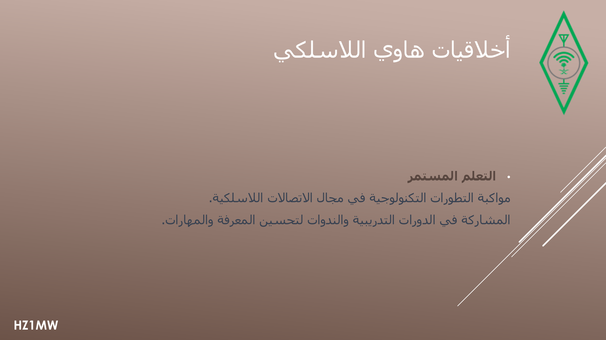
شرح مختصر
تذكّر الشريحة بأن التقنية تتغير باستمرار وأن الهاوي يحتاج إلى متابعة وتطوير دائمين. حضور الدورات والندوات والتجربة العملية يساعد الهاوي على النمو بثقة.
014
خلاصة أخلاقيات الهواية
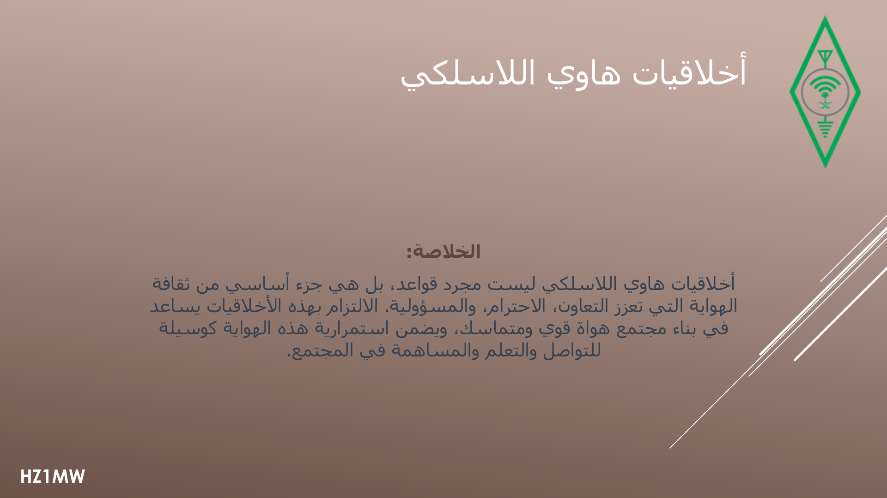
شرح مختصر
تلخص الشريحة أن الأخلاقيات ليست قائمة تعليمات فقط، بل ثقافة تحافظ على تماسك مجتمع الهواة. تذكّر أن الالتزام بها يجعل ممارسة الهواية أكثر أمناً ومتعة وفائدة.
015
أنظمة ومصطلحات وأساسيات الهواية
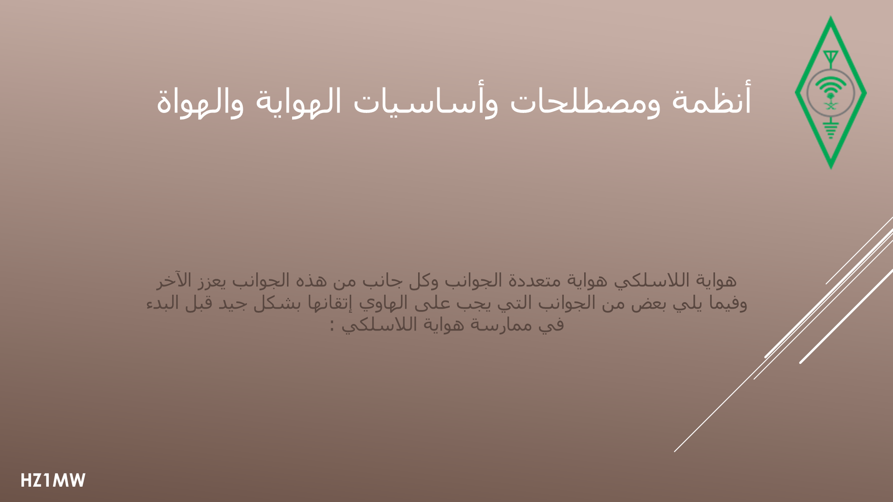
شرح مختصر
تنتقل الشريحة من جانب الأخلاقيات إلى المهارات والمعارف التي يحتاجها الهاوي قبل التشغيل العملي. الهدف أن يدرك الهاوي الجديد أن الرخصة تحتاج إلى ممارسة واعية وفهم مستمر للأساسيات.
016
الأبجدية المنطوقة
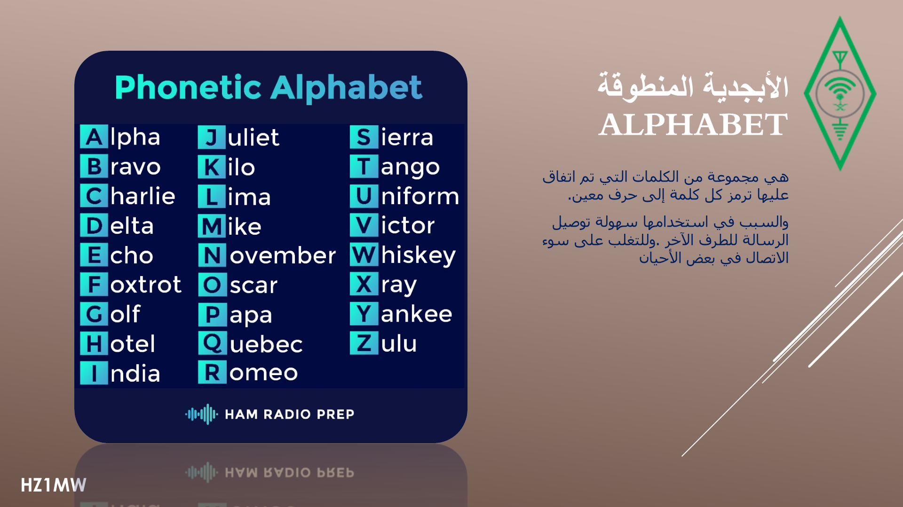
شرح مختصر
تشرح الشريحة فكرة الأبجدية المنطوقة واستخدامها لتوضيح الحروف في ظروف الاتصال الصعبة. تذكّر أن إتقانها يساعدك على تبادل إشارات النداء والمعلومات بدقة أكبر.
017
إشارات النداء
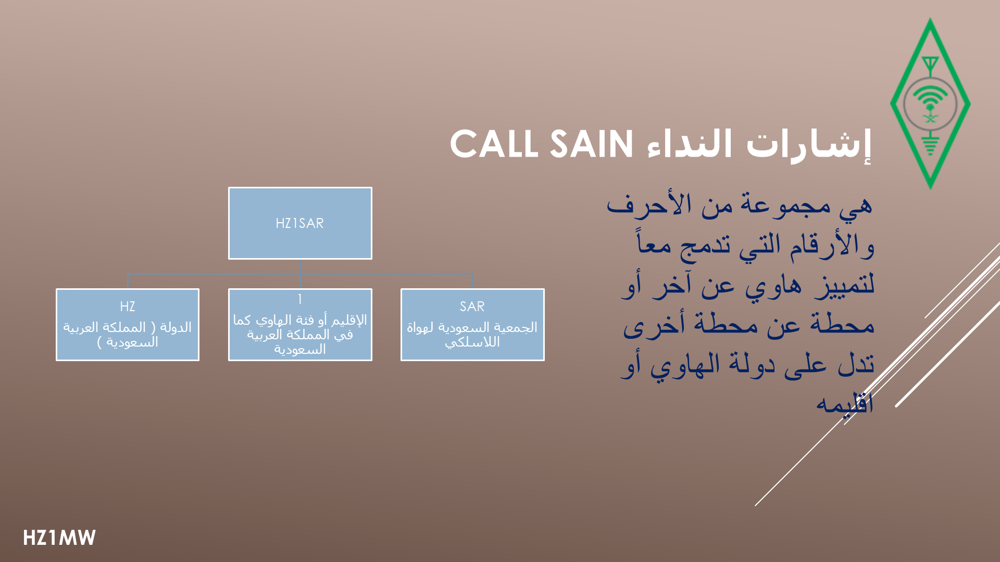
شرح مختصر
تعرف الشريحة إشارة النداء بوصفها هوية المحطة أو الهاوي على الهواء. على الهاوي الجديد أن يستخدم إشارته الرسمية بوضوح وأن يحافظ على قيمتها من خلال تشغيل منضبط.
018
رموز كيو
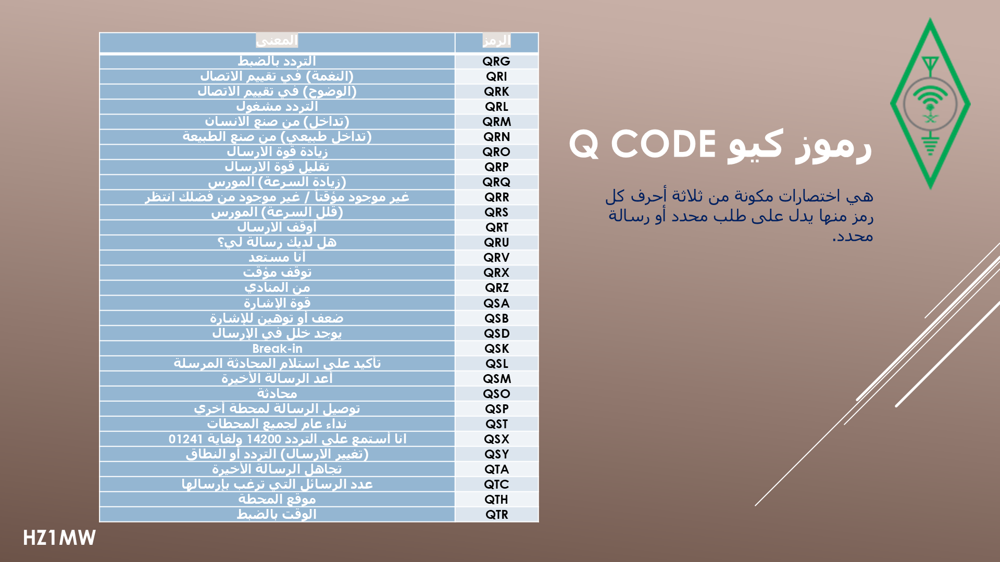
شرح مختصر
تستعرض الشريحة مجموعة من رموز Q المستخدمة لتسهيل التواصل المختصر بين الهواة. لا يلزم حفظ كل شيء دفعة واحدة، لكن فهم الرموز الشائعة مثل QRM وQRZ وQSL مهم للتشغيل اليومي.
019
الترددات المسموح استخدامها
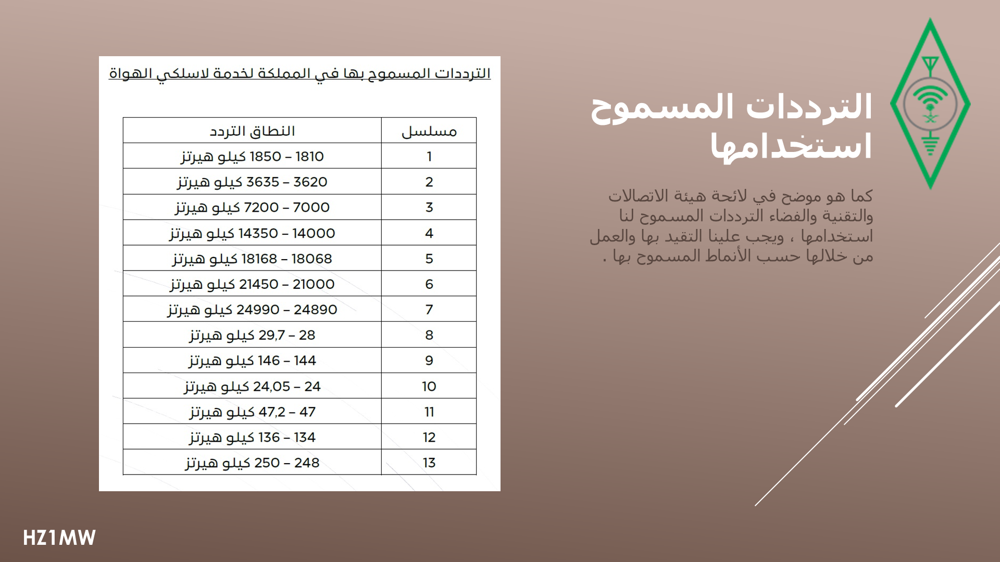
شرح مختصر
تؤكد الشريحة ضرورة الالتزام بالترددات والأنماط المصرح بها في اللائحة الرسمية. تذكّر أن معرفة النطاقات المسموحة جزء أساسي من التشغيل الآمن والنظامي.
020
إجراء اتصال لاسلكي متكامل
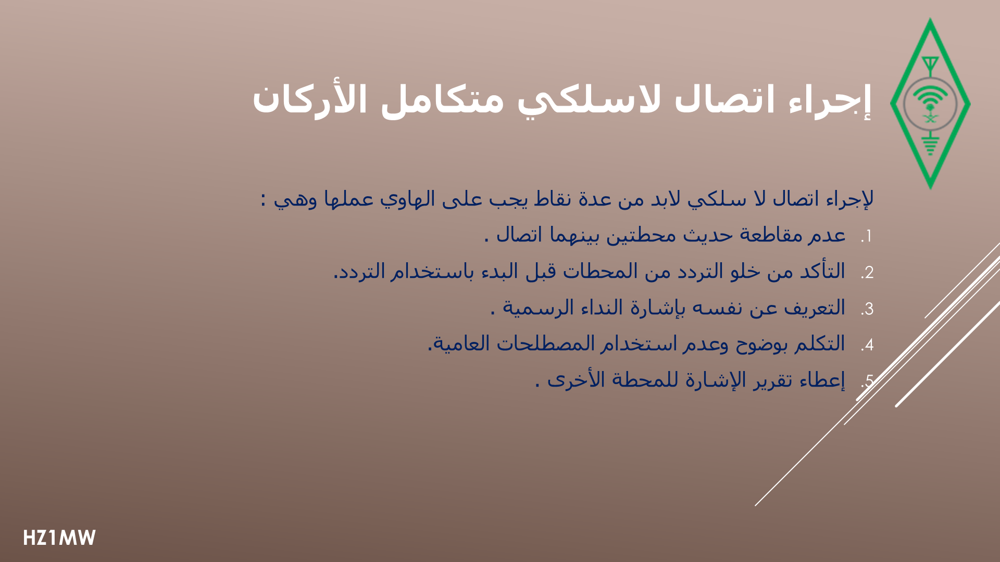
شرح مختصر
تشرح الشريحة الخطوات العامة لإجراء اتصال صحيح، من التأكد من خلو التردد إلى إعطاء تقرير الإشارة. على الهاوي الجديد أن يتدرب على هذه الخطوات حتى تصبح عادة تشغيلية واضحة.
021
الدخول على تردد عليه محطات
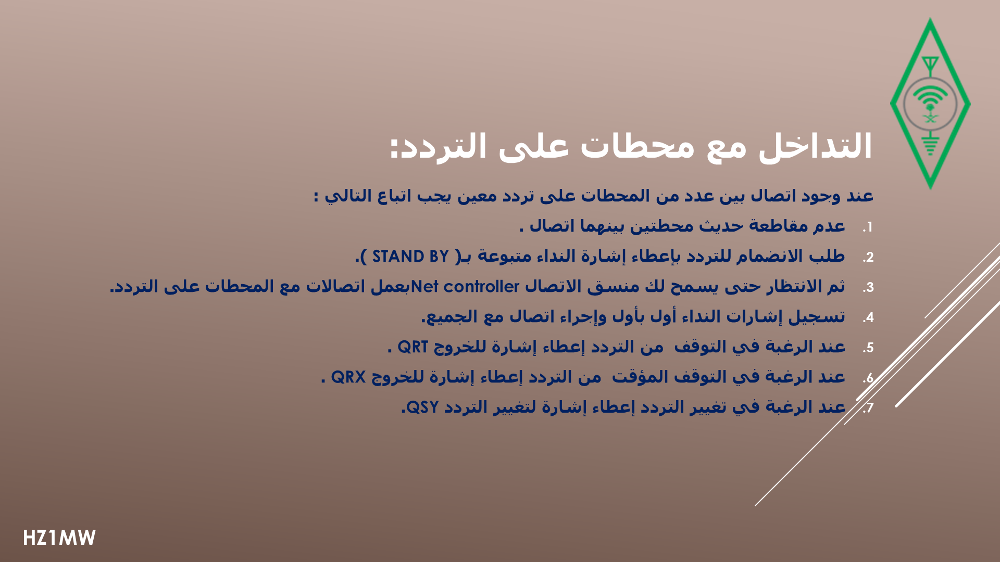
شرح مختصر
توضح الشريحة آداب الانضمام لاتصال قائم أو شبكة على تردد معين. تذكّر أن الصبر وعدم المقاطعة واتباع توجيه منسق الاتصال يحافظ على النظام وجودة التواصل.
022
الرد على نداء CQ
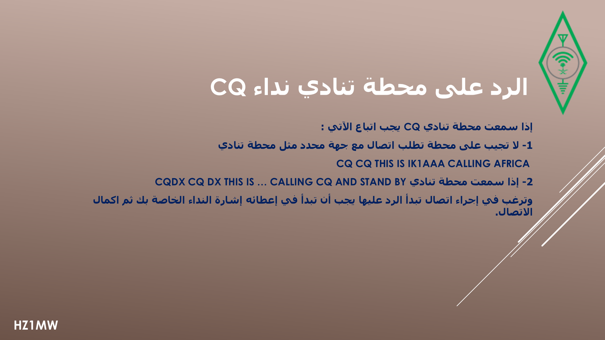
شرح مختصر
تشرح الشريحة كيفية التعامل مع محطة تنادي CQ ومتى يكون الرد مناسباً. على الهاوي الجديد أن ينتبه إذا كان النداء موجهاً لمنطقة أو جهة محددة قبل أن يجيب.
023
سجل الاتصال
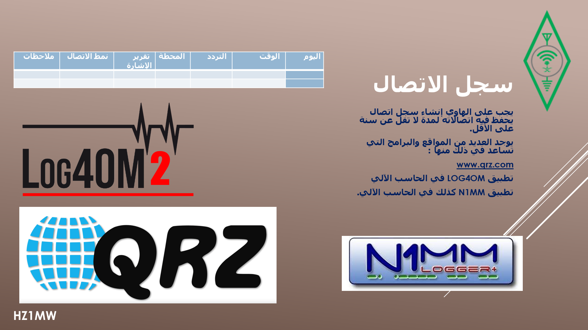
شرح مختصر
تعرض الشريحة أهمية إنشاء سجل للاتصالات وحفظ بياناتها الأساسية. تذكّر أن السجل يساعدك في المتابعة والتوثيق وإرسال بطاقات أو تأكيدات الاتصال لاحقاً.
024
توجيهات عامة للهاوي الجديد
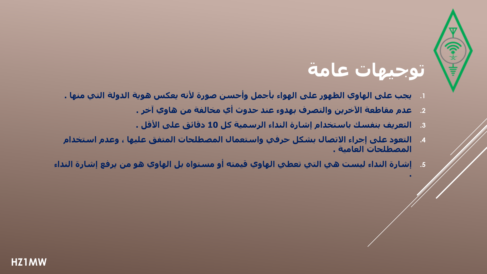
شرح مختصر
تجمع الشريحة نصائح عملية حول الظهور الجيد على الهواء، التعريف بإشارة النداء، وتجنب المقاطعة. الرسالة الأهم أن قيمة إشارة النداء ترتفع بسلوك الهاوي والتزامه.
025
فريق العمل والختام
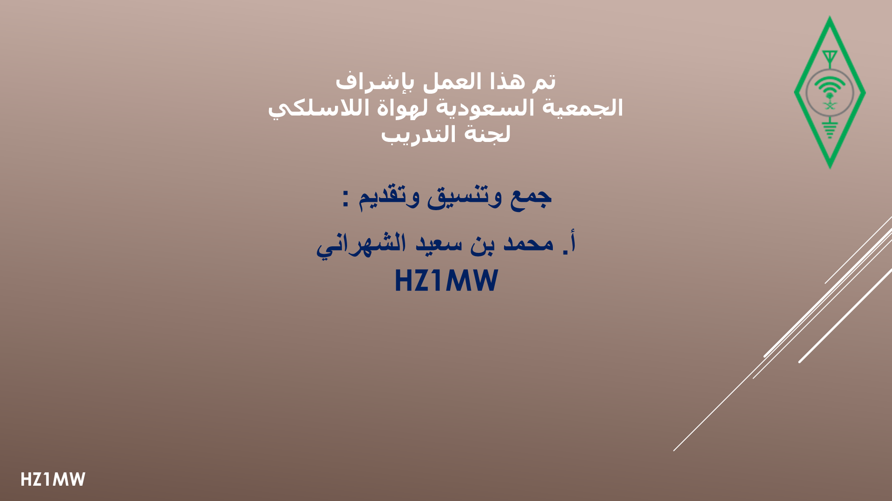
شرح مختصر
تختتم الشريحة المحاضرة بذكر الإشراف والإعداد. تذكّر أن هذه المادة نقطة انطلاق، وأن التواصل مع لجنة التدريب والجمعية يساعدك على مواصلة التعلم والممارسة.